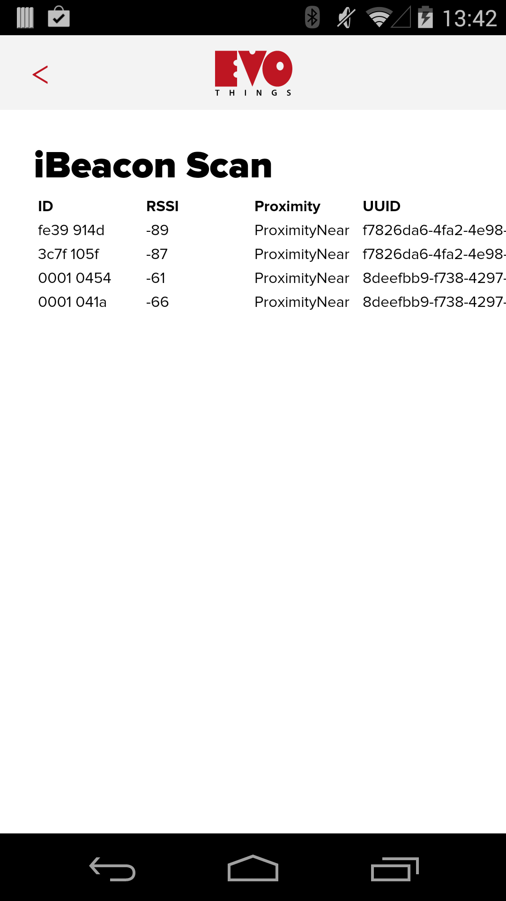

iBeacon Scan
Scan For iBeacons. This app demonstrates how to scan for iBeacons.
Run this example in the Evothings client app, or build a Cordova app with the plugin cordova-plugin-ibeacon. iOS 7 or Android device with support for Bluetooth 4.0 and Android 4.3 or higher required. 
Source Code
You can browse the source code for this example at the Evothings GitHub repository
The file index.html is the main HTML file of the app.
In file app.js you will find the JavaScript code for the app. Note that you need to add your own manufacturer UUIDs to the list in this file (see code around line 50) for the app to detect your iBeacon(s).
What You Need
Run this example in Evothings Client on Android or iOS.
Optionally you can build a stand-alone native app using Cordova. You then need to include the Cordova plugin com.unarin.cordova.beacon. For further details see the Cordova build guide.
An iOS device (iOS 7 or 8) or an Android device with support for Bluetooth 4.0 (which includes BLE) is required. For Android version 4.3 or later is needed.
You also at least one iBeacon device you can work with. Note that you need to add your manufacturer UUID(s) to file app.js for the app to detect your iBeacon(s).
How To Get Up And Running
Follow these steps to get started with this example:
- Run the Evothings Workbench on your desktop/laptop computer.
- Run the Evothings client app on an Android mobile device and connect to the Workbench.
- Press the "Code" button, edit file app.js and add your UUID(s) and save the file.
- Launch the example "iBeacon Scan" from the Workbench window by pressing "Run".
- If everything works, the app should automatically detect your iBeacons.